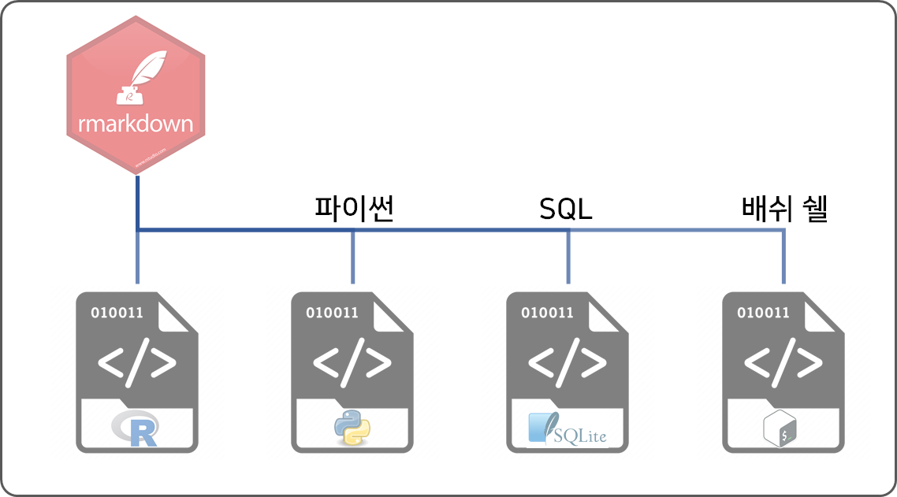

R 코드를 데이터 과학 문서에 임베딩(embedding)할 경우 R 코드를 “R 코드 덩어리(code chunk)”로 작성한다. 다음과 같이 R 코드 덩어리를 다음과 작성했다고 가정하자.
```{r R-code-chunk}
data(cars)
summary(cars)
``` 상기 코드 실행결과는 다음과 같다.
speed dist
Min. : 4.0 Min. : 2.00
1st Qu.:12.0 1st Qu.: 26.00
Median :15.0 Median : 36.00
Mean :15.4 Mean : 42.98
3rd Qu.:19.0 3rd Qu.: 56.00
Max. :25.0 Max. :120.00 데이터 과학의 양대 축을 이루는 언어인 파이썬 코드도 R마크다운에서 파이썬 코드 덩어리로 실행이 가능하다.
```{python python-code-chunk}
print("파이썬 사랑해요!!!")
```상기 코드 실행결과는 다음과 같다.
파이썬 사랑해요!!!쉘(shell) 스크립트는 물론이고 자주 사용하는 쉘 명령어도 적용이 가능하다.
```{bash shell-code-chunk}
echo "배쉬 쉘 사랑해요!"
```상기 코드 실행결과는 다음과 같다.
hello world!특히, 윈도우에서 배쉬 쉘스크립트를 실행시키기 위해서는 다음 작업이 필요하다. Cygwin을 설치하하고 “환경설정” 경로명에 C:\cygwin64\bin을 추가하여 R마크다운에서 bash 명령어를 실행시킬 수 있도록 준비한다.
SQL 코드R마크다운 SQL 코드 덩어리를 돌리기 위해서는 데이터 생성작업부터 필요하고 R 코드 덩어리 정의부분에 connection =에 데이터베이스 객체 명칭을 넣어주어야 한다.
sqlite3 DB 생성sqlite3 예제 데이터베이스를 다운로드 받는다.
이제 sqlite3 데이터베이스를 생성시킨다. 이를 위해서 다음 두가지 작업을 수행한다.
Chinook_Sqlite.sql 파일을 다운로드 받은 디렉토리로 이동한다.sqlite3 명령어를 실행시켜 데이터베이스를 생성한다.
$ sqlite3 Chinook.dbChinook_Sqlite.sql 스크립트를 실행하여 Chinook 데이터베이스를 생성시킨다.
sqlite> .read Chinook_Sqlite.sqlsqlite3 DB를 R에 연결생성된 SQLite3 데이터베이스를 DBI 커넥터를 이용하여 데이터베이스에 연결시킨다.
R마크다운에서 SQL 문을 데이터베이스에 연결시켜 돌리기 위해서는 다음과 같이 코드를 작성한다. SQL 코드 본문에는 당연히 SQL 문이 들어가고, connection = chinook을 통해 SQL 문을 돌리는데 필요한 데이터베이스를 정의시킨다.
```{sql sql-code-chunk, connection = chinook}
SELECT * FROM Artist LIMIT 10;
```상기 코드 실행결과는 다음과 같다.
| ArtistId | Name |
|---|---|
| 1 | AC/DC |
| 2 | Accept |
| 3 | Aerosmith |
| 4 | Alanis Morissette |
| 5 | Alice In Chains |
| 6 | Antonio Carlos Jobim |
| 7 | Apocalyptica |
| 8 | Audioslave |
| 9 | BackBeat |
| 10 | Billy Cobham |
데이터 과학자 이광춘 저작
kwangchun.lee.7@gmail.com